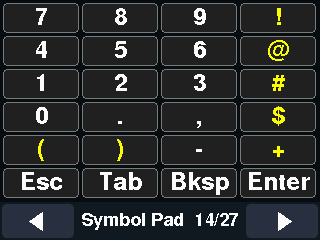
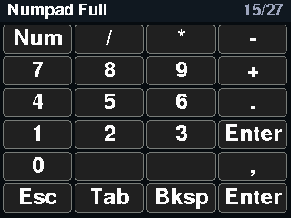
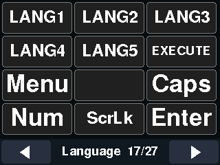
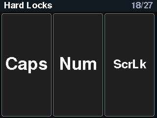
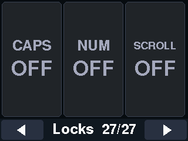

14 Symbol Pad 6×4
A symbol pad: digits 0 to 9, punctuation and the shifted symbols (! @ # $ and brackets), plus Esc, Tab, Backspace and Enter.


 Classic: Typing and layout
Classic: Typing and layoutPages 14, 15, 16, 17, 18, 27 of 27 in the classic interface.
Symbols, the numpad, international and language keys, and the lock keys. Pages 14, 15, 16, 17, 18, 27, classic interface.
A symbol pad: digits 0 to 9, punctuation and the shifted symbols (! @ # $ and brackets), plus Esc, Tab, Backspace and Enter.

A complete numeric keypad: Num Lock, the four operators, digits, decimal point and keypad Enter, with Esc, Tab and Backspace underneath.


The International 1 to 9 keys that Japanese and some European layouts use. Their generated names are long, so the tiles are truncated; this is a known cosmetic issue.


Language and input keys: LANG1 to LANG5, Execute, Menu, the three lock keys and Enter.


The three lock keys (Caps, Num, Scroll) as big tiles that send the plain key press. The Locks page at the end shows their state instead.


The Locks page: three large tiles for Caps, Num and Scroll Lock. Tapping one sends the key; the tile then shows ON or OFF as reported back by the host, and the LED bar lights a segment for each lock that is on (Caps orange, Num green, Scroll blue). On the Core2 the B button toggles this page; on the CoreS3 tap the title in the bottom bar.

